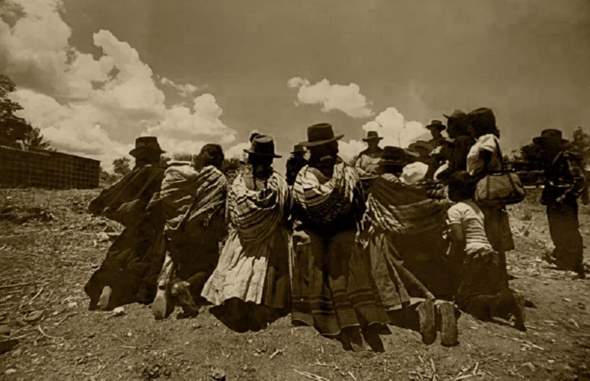
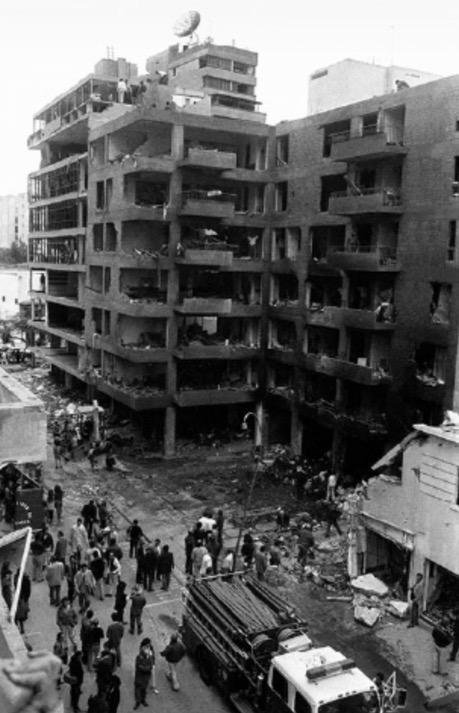
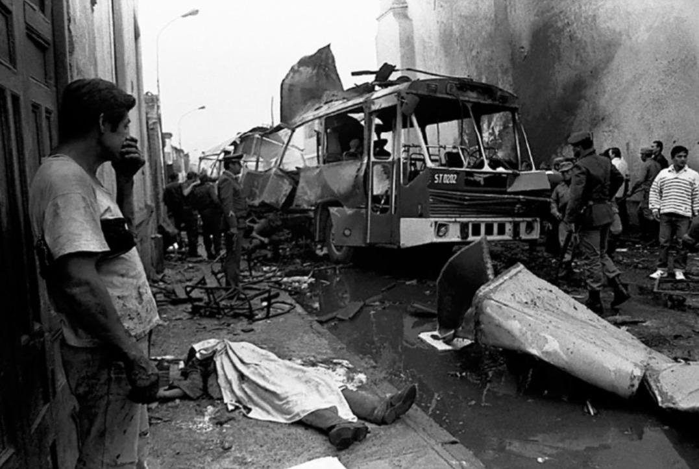
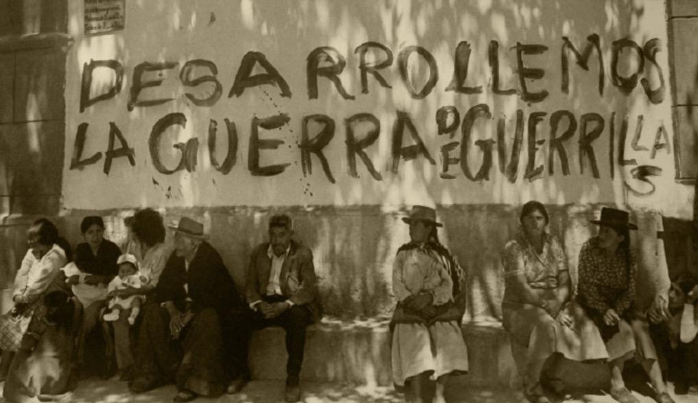

Opinión
Yuyanapaq: una historia que el Perú nunca debe olvidar
Por Alejandro CastilloMartes 3 de noviembre de 2026
Al conocer Yuyanapaq, uno comprende que la historia del Perú no solamente está escrita en los libros, sino también en los rostros, las fotografías y los testimonios de quienes vivieron una de las etapas más dolorosas de nuestro país.
Observar estas imágenes es acercarse a una realidad que muchas veces parece lejana para las nuevas generaciones. Sin embargo, detrás de cada fotografía existe una historia de dolor, familias destrozadas, vidas interrumpidas y personas que tuvieron que aprender a vivir con las consecuencias de la violencia.

Entre 1980 y 2000, el Perú atravesó un conflicto armado interno que dejó profundas heridas en nuestra sociedad. El terrorismo de Sendero Luminoso y el MRTA, así como las graves violaciones de derechos humanos cometidas durante ese periodo, marcaron la vida de miles de peruanos.

Personalmente, considero que Yuyanapaq es una exposición que todos deberíamos conocer. Nos invita a reflexionar sobre el país en el que vivimos y sobre la importancia de no permanecer indiferentes frente al sufrimiento de nuestros compatriotas.
Como estudiante de periodismo, considero que recordar estos acontecimientos también representa una responsabilidad. El periodismo tiene el deber de investigar, documentar y contar las historias, especialmente aquellas que no deben quedar en el olvido.
El Perú no puede borrar lo que ocurrió, pero sí puede aprender de su historia. Conocer nuestro pasado es fundamental para construir una sociedad más consciente, democrática y comprometida con el respeto a la vida y los derechos humanos.


Yuyanapaq no solamente nos muestra fotografías de una época oscura; nos recuerda que detrás de cada imagen hubo seres humanos y que la memoria de un país también se construye escuchando a sus víctimas.